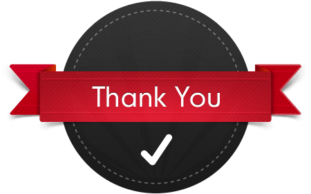

|

|
-
We believe in importance
of nurturing relationships that reflect our culture of
unwavering ethics and mutual respect. We believe our
responsibilities extend beyond business.
-
Welkin’s ability to
deliver leading-edge solutions is in bringing together highly
talented people who are able to challenge conventional thoughts,
offer different perspectives and innovative ideas. Our experts
are updated with the latest technology development in the
software domain and build futuristic software applications.
-
Join Welkin and
experience broad opportunities to create bolder, efficient
innovations for our clients. With us, you will have a hand in
shaping your career in a bright way. Are you ready for this
challenge? Then return home with us and take your career to
heights you never thought achievable.
|